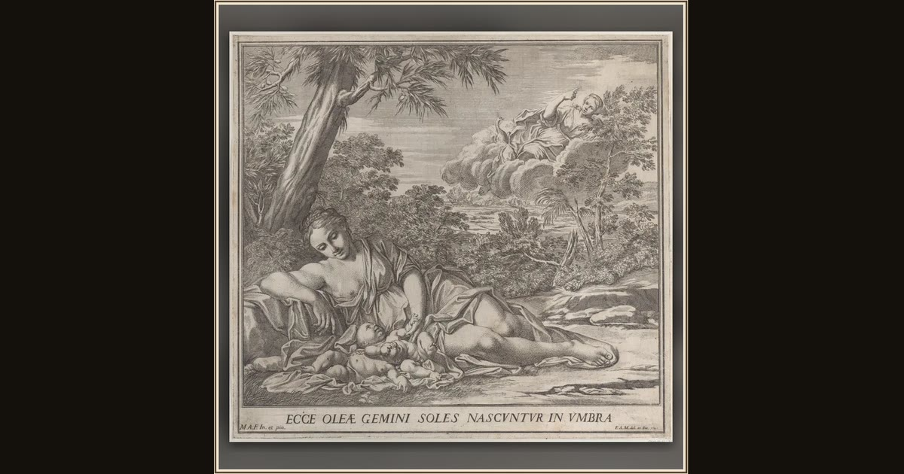

Latona and her sleeping twins, Apollo and Diana, within a landscape
Francesco Antonio Meloni · 1705 · met
Latona, the Latin name for Leto, rests beneath a tree with Apollo and Diana at her side; the scene follows the birth of Apollo described in the hymn (116–118) Explore its place in Homer's The Homeric Hymns, Hymn 3 · To Apollo, line 117.